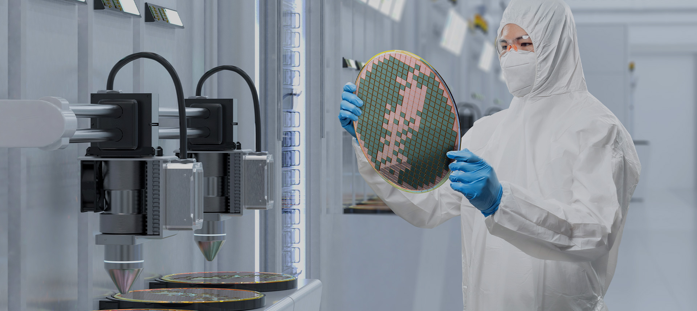
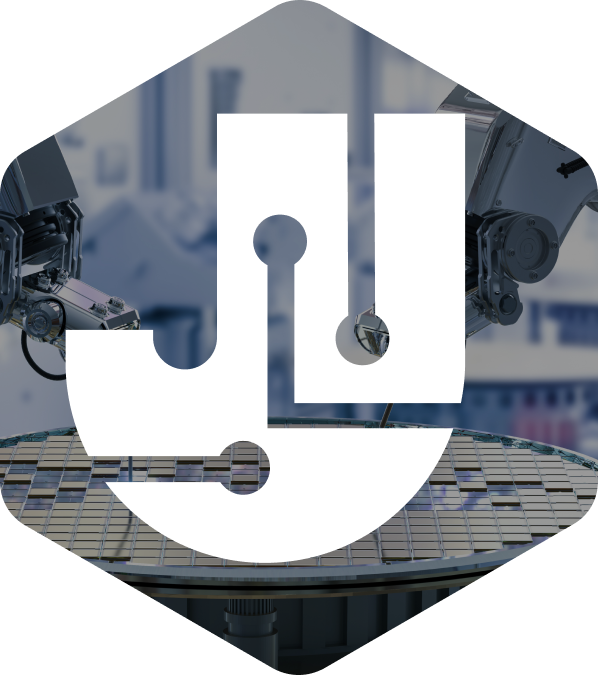
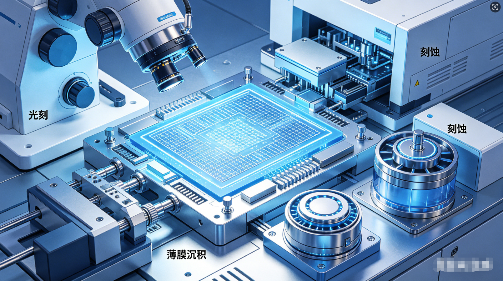

首页、MEMS 加工、测试服务、半导体材料、行业动态、关于我们、联系我们。

01/03
01 / 先看全貌可信的工业站点，
可信的工业站点，
先让人找到路径
原站将“公司能力、工艺服务、设备测试、材料销售、行业内容”排成一条渐进式路径：先建立可信印象，再解释服务，再补充证据，最后给出咨询入口。
全屏场景图 + 中央价值主张 + 编号分页 + 向下阅读提示。
7 个 MEMS 工艺、7 个测试服务、3 个半导体材料入口。
精英团队、优质高效、及时响应、严格保密。
02 / 拆解模式五个值得迁移的
五个值得迁移的
内容与视觉模式
每个模式都写成“适用条件 → 设计动作 → 交付边界”，方便 AI 在新项目里判断是否应该使用。
A / 01
服务地图
左侧用高层分类定位，右侧用编号卡片承接工艺、设备或材料入口。
适合服务项 ≥ 6，用户需要比较流程与能力范围时。
A / 02
全屏定调
用真实场景图建立洁净、精密和专业的第一印象。
边界关键信息必须有 HTML 文字，不能只写在图里。
A / 03
叠加导航
Hero 上透明叠加，进入滚动/聚焦状态后转实体背景。
先验先检查 Logo 对比度，再决定是否采用透明态。
A / 04
中心锚点
把团队、交付、响应、保密等承诺围绕一个中心图形组织。
避免口号不要升级成没有来源的客户规模或转化指标。
A / 05
一主三辅
一张大图承接行业深度，三条小条目承接持续更新，形成可扫描的新闻层级。
适合内容有真实发布日期、摘要和可打开的详情页时。

03 / 证据与判断
视觉是证据的放大器，
视觉是证据的放大器，
不是证据的替身
原站的视觉素材集中在洁净室、晶圆、工艺设备和结构图，和 MEMS 服务语境一致。可迁移的不是“绿色 + 大图”，而是让每张图承担一个明确任务：建立信任、解释流程或展示结果。
- 已核实
- 主页 HTML 明确包含公司简介、产品与服务、核心优势、行业动态和合作图集。
- 待确认
- 原站的客户数量、合作院校范围、交付指标和案例授权状态，不能从首页视觉直接推断。
- 项目专属
- 图片构图、绿色色值和 Logo 只能作为本案例的观察结果，不升级为所有工业站点的默认答案。
04 / 组件实验室把“左侧分类 + 右侧卡片”
把“左侧分类 + 右侧卡片”
变成可复用组件
下面是案例页自带的静态演示，不是原站的生产代码。它保留信息关系，并补上键盘、触摸和减少动效偏好需要的降级。
可迁移组件 / 01
07 项让工艺链路变得可扫描
01 / 07
可迁移组件 / 02
07 项把仪器能力写成用户任务
02 / 07
实现公式触发器 → 状态变化 → 交互目的 → 最终状态/降级
05 / 交互触发好动效不是“会动”，
好动效不是“会动”，
而是知道何时停
原站的动效有明确的状态关系，但新项目应补齐可中断、键盘、触摸和减少动效偏好。
触发器状态变化可迁移规则降级
滚动 / hover导航透明 → 白底，Logo 与文字变深只在对比度已验证的 Hero 上使用叠加导航移动端直接实体导航
分类点击 / focus左侧 active，右侧面板切换用 `aria-selected` 与 URL/锚点保持状态可恢复脚本失败时垂直卡片流
图片进入视口短距离淡入、缩放或错峰显示优先 transform/opacity，预留图片比例防 CLS`prefers-reduced-motion` 关闭
咨询按钮点击右侧入口 → 留言面板展示真实字段、校验、成功/失败反馈静态联系方式与邮箱链接
06 / 资产观察素材不是装饰，
素材不是装饰，
每张图都要有岗位
这里仅展示已归档的公开资源。它们作为证据和视觉参考，不等于生产项目可以直接使用。

07 / AI 建站规则把观察结果写成
把观察结果写成
可以复用的判断题
下次开始工业技术型网站前，可把下面这组规则和真实资料一起交给 AI，再按项目证据做取舍。
应该做
让复杂服务先分组，再展开
- 先确认服务/产品分类数量和用户任务。
- 卡片至少有标题、证据图、短说明和详情入口。
- 桌面多栏，移动端自然退化为单列或可操作轮播。
先核实
把“可信”绑定到证据
- 客户规模、合作院校、交付周期和资质必须有来源。
- 没有授权的案例图只放在内部复盘，不进生产首页。
- 自动轮播、视差和 hover 都要有静态状态。
不要复制
不要把视觉技巧当成策略
- 不要因为原站使用绿色就给所有行业套绿色。
- 不要用超大 Hero、过度留白或连续动画填充页面。
- 不要让手机端依赖 hover、横向溢出或被浮层遮挡。
交付摘要
查看资源来源 已归档：原始资源 + 视觉化案例页 + AI 规则
后续可以直接把本目录的 `README.md` 与案例页作为上下文输入；生产项目仍需以客户资料、授权和真实证据为准。